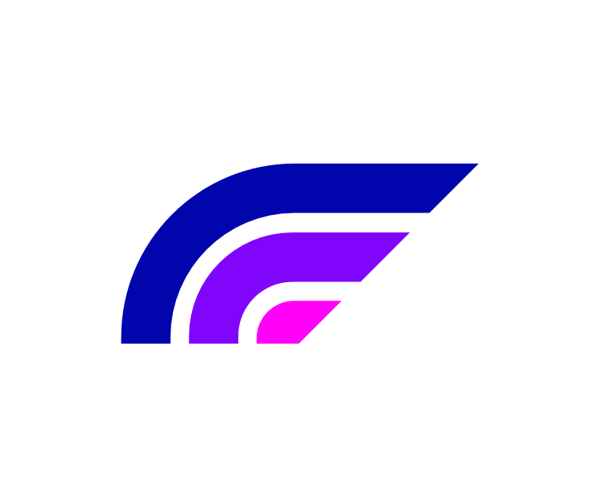
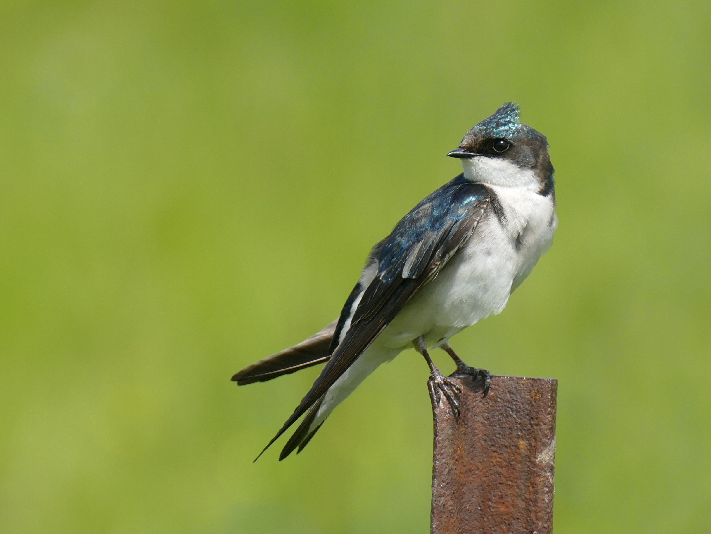
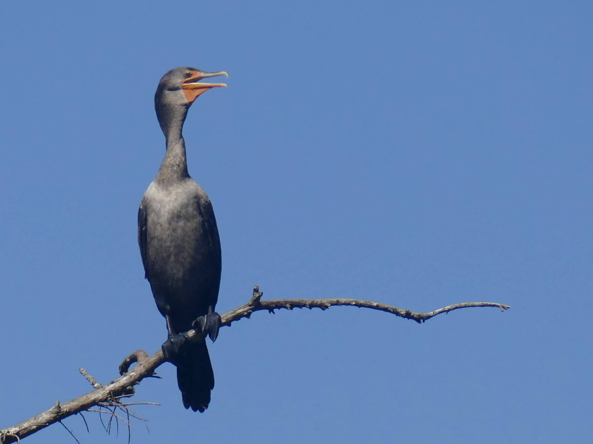
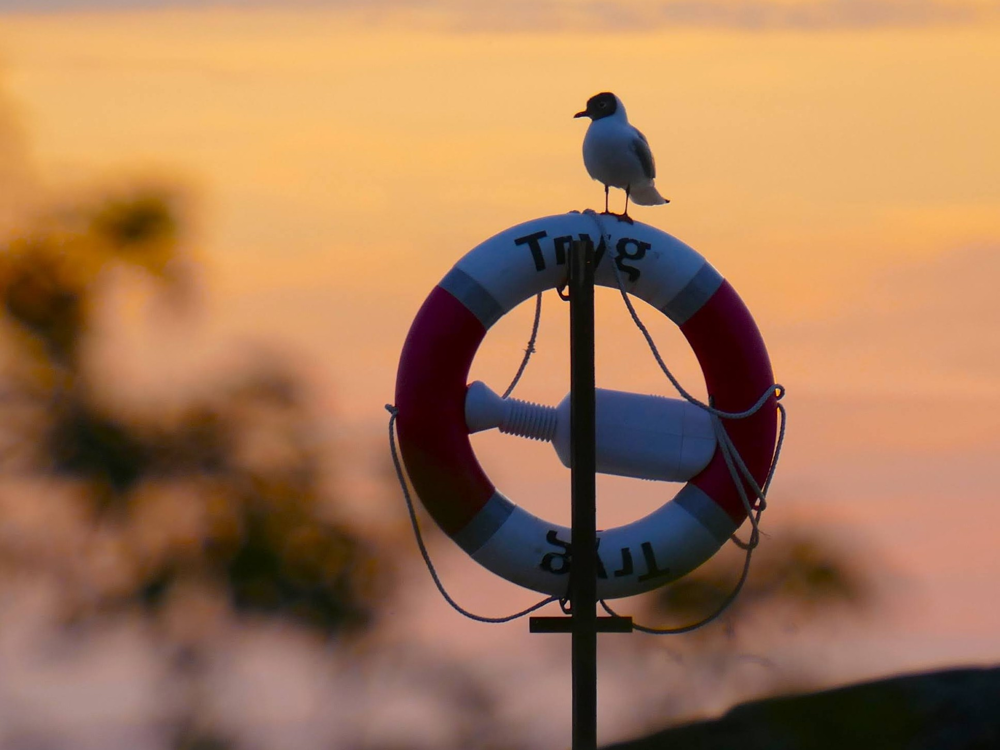
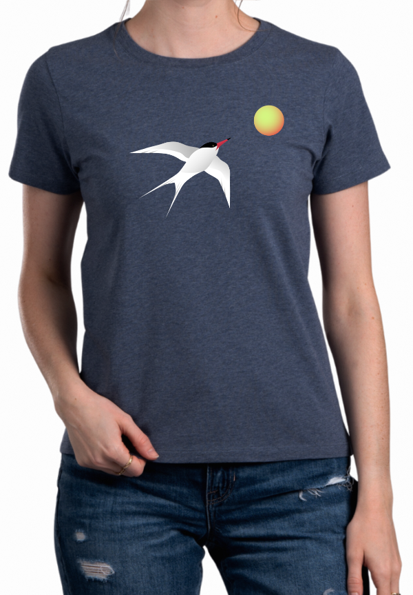
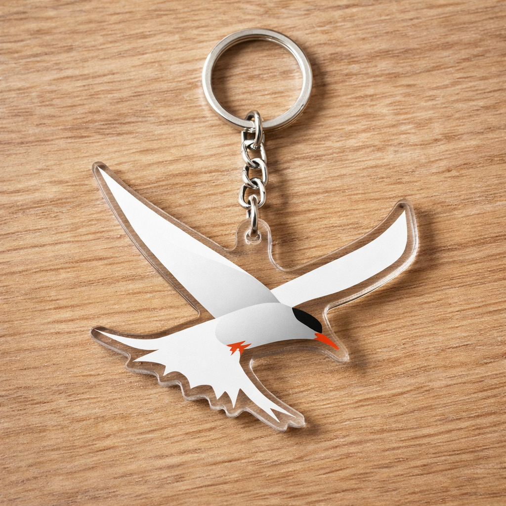

We build tools for the bird community
Founded in 2026 by a team of avid birders in Norway. We strive to create data-driven tools for the bird community (from birdwatching to research). Our goal is to share our love of nature and provide a spotlight on the need for conservation efforts.
fugl.io Flight Patterns: a powerful bird index




"Fugl" (/fuːl/, [fuːˀl]) is the Norwegian word for bird. fugl.io Flight Patterns is a comprehensive database that gathers bird ID descriptors, behavioural traits, range and sightings maps, and additional information. fugl.io Flight Patterns serves as both a field guide and a powerful research tool, with a people-friendly interface and engaging tools.
< > Avilingo: bird name translator
Have you ever wondered about the names of birds in other languages?
Read more about this species at Birds of the World
Scientific/Latin
Phoenicopterus roseus
 English-UK
English-UK
Greater Flamingo
 Norwegian / Norsk
Norwegian / Norsk
rosenflamingo
 Swedish / Svenska
Swedish / Svenska
större flamingo
Modern Dinosaur: bird art and apparel
50% of profits go to support conservation work by BirdLife Norway.



Founders
Ninni Victoria and Paul Richard met in 2024 and bonded instantly over a love of books and birds. What began as a hobby of collecting vintage field guides led to greater involvement in the birding community, evolving into volunteering and conservation work, and sparking the creation of fugl.io.
Ninni Victoria (she/her), born in Oslo, is a the Technology Projects Architect at BirdLife Norway,
and is a board member of its Østfold chapter. She has a background in web/app development.
Ninni Victoria's favourite bird: Roseate Spoonbill
Birdwatching "Nemesis" bird: Eurasian Pygmy Owl
Paul Richard (he/him), originally from Canada, served as an analyst with the NHL's Nashville Predators hockey team in the
United States for 10 years, utilizing statistics in player valuation and arbitration, before retreating to a quieter life
focused on nature and the outdoors. He holds a Master's Degree in Human Kinetics from the University of Ottawa.
Paul Richard's favourite bird: Bearded Vulture
Birdwatching "Nemesis" bird: It was the White-Throated Dipper (Norway's national bird)
until finally coming across one in November 2025
© 2026 Aviala.io. Terms and Conditions - Privacy Policy - Cookie Preferences